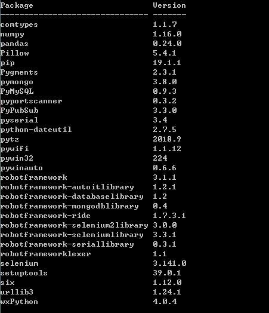

2 环境配置与安装
这里仅简单说一下windows下的安装，Linux及其他系统用户应该不需要介绍~
- 安装python3.6.6
Python安装过程中注意勾选添加add path选项（添加环境变量地址）。这里python 3 版本应该都可以，但安装Robbo Framework之前必须先安装 Python 环境。
- 安装pip，在pip目录下找到setup.py，在该目录下打开命令行(cmd)运行:
pip install robotframework
为了在命令行中更方便的使用 Robot Framework, 推荐将 运行脚本 所在的路径添加到 PATH.
- 安装autoit-v3
这是一个操作windows界面的程序
- 安装Selenium、Selenium2Library、wxpython、Pypubsub、pywin32、RIDE，pyserial、AutoItLibrary，类似第3步，这些都是常用的库。
- 安装firefox，并将firefox对应的driver：geckodriver.exe放到环境变量中，或者直接放到python目录下。
至此，常用的库已安装完毕。用pip安装的库（输入pip list）如下：
